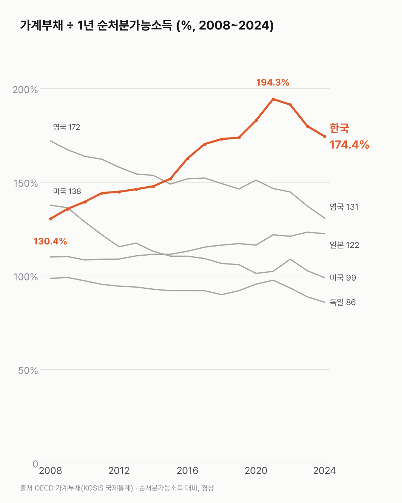
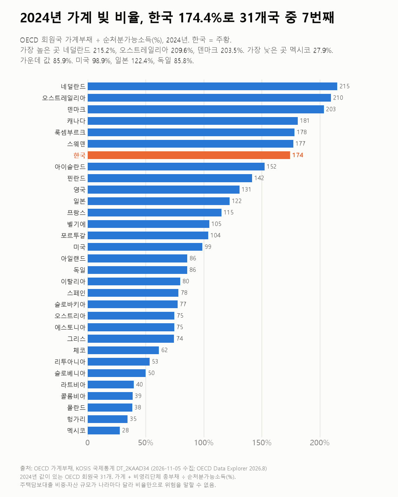

가계 빚, 2021년보다 줄었지만 여전히 1년 소득의 1.7배예요
한국 가계 빚은 가장 높던 2021년보다 줄었어요. 그래도 OECD 31개국 가운데 7번째로 많아요.

- 2024년 한국 가계 빚은 세금 등을 뺀 1년 소득의 174.4%(약 1.7배)예요.
- 2008년 130.4%에서 2021년 194.3%까지 올랐다가 2024년 174.4%로 내려왔어요.
- 2024년 값이 있는 OECD 31개국 가운데 7번째로 높아요. 한가운데 나라는 85.9%예요.
같은 표에서 미국 선을 한국 옆에 그려 보면 두 선이 엇갈려요. 미국 가계 빚은 소득 대비 137.6%에서 98.9%로 내려왔어요. 같은 기간 한국은 130.4%에서 174.4%가 됐어요.
한국 선은 2016~2021년에 빠르게 올라 2021년 194.3%로 가장 높았어요. 그 뒤 내려와 2024년 174.4%가 됐어요. 약 1.7배예요. 2023년 179.8%보다는 낮아요.
2024년 값이 있는 OECD 31개국 중에선 7번째예요. 네덜란드 215.2%, 오스트레일리아 209.6%, 덴마크 203.5%가 높고, 멕시코 27.9%가 가장 낮아요. 가운데 값은 85.9%예요. 바로 위 스웨덴(177.2%)과는 차이가 작아요.
같은 해 영국은 130.8%, 일본 122.4%, 미국 98.9%, 독일 85.8%예요. 영국도 171.9%에서 내려왔어요.


빚만 놓고 잰 비율이에요. 그 빚 뒤에 있는 집 같은 자산까지 같이 놓으면 순서가 어떻게 달라질지 궁금했어요.
이 숫자는 어디서 왔나요
출처
기준일 2008~2024년이에요.
OECD(Data Explorer 2026.8)
- 가계부채KOSIS DT_2KAAD34원본 보기
나라별 1995~2025, 한국 2008~2024
어떻게 셌나요
- OECD가 나라별로 모은 국제통계예요. KOSIS 국제통계에 실린 표를 썼어요.
- 가계부채 비율은 가계와 비영리단체가 진 빚 전체를 1년 순처분가능소득(가계가 1년 동안 번 소득 가운데 쓸 수 있는 돈)으로 나눈 값이에요. 본문의 '소득 대비'가 이 비율이에요.
- 빚은 주로 주택담보대출이고, 신용·자동차·학자금 대출도 들어가요. 주식·펀드는 빠져요(표 주석).
- 분모가 GDP와 달라서, 자주 보도되는 'GDP 대비 가계부채'(한국 2025년 말 89.0%)와 숫자가 달라요.
한계 3가지
이 데이터로 말할 수 없는 것
- 빚만 본 비율이에요. 집 등 자산, 금리, 주택담보대출 비중이 나라마다 달라 비율만으로 위험을 말할 수 없어요.
- 가계 전체 평균이에요. 소득·나이별 차이는 가구 부채 변화 글에서 다뤘어요. 저축 쪽은 가계순저축률 글에 있어요.
- 원인(집값·금리·대출 규제)은 이 데이터로 알 수 없어요. 대출·투자 조언은 하지 않아요.
새 글 나오면 받아 보기
피드 리더 앱에 이 사이트 주소를 한 번 넣어 두면, 새 글이 올라올 때 앱에 떠요. 가입이나 메일 주소는 필요 없어요.
받는 법 보기
- 피드 리더 앱을 하나 골라요. 새 글을 모아 보여 주는 앱이에요. 예를 들면 Feedly나 Inoreader가 있어요. 둘 다 무료고 웹·휴대폰에서 써요.
- 앱에서 '구독 추가'(+)를 누르고 아래 주소를 붙여 넣어요.
- 끝이에요. 새 글이 올라오면 앱 목록에 떠요.
https://protofu.github.io/opendata-insight/feed.xmlFeedly를 쓴다면 여기를 눌러 바로 추가할 수도 있어요.